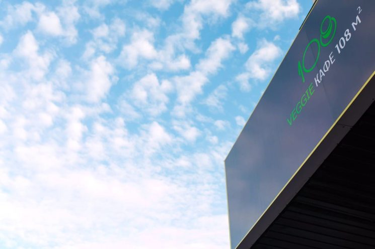
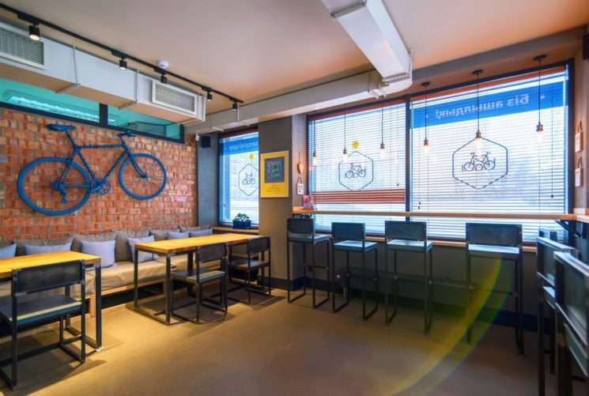

Cooking is a manifestation of love and therefore cooking consciously in the right frame of mind is one of the main rules of Veggie Cafe 108m2. The team are exceptional vegetarians who are happy to invite all guests and residents of the capital to taste vegetarian, vegan and raw food cuisine, feel the blissful atmosphere and just relax with friends.
Location: 25 Baraeva str.
Working hours: 10:00-22:00
Average check: 3000 tenge
Information by phone: +7 777 473 34 64

Here it is convenient for vegans and lovers of healthy food to take food with them, as it is packed in stylish and environmentally friendly disposable tableware. You can order soups, hot dishes, salads, desserts and freshly squeezed cold-pressed juices.
All food and pastries are prepared in the morning by cafe chefs. Desserts do not use trans fats, and cake creams do not contain butter. There are also desserts for vegans without gelatin and coffee with soy milk.
Location: Zhenis Ave., 43/4 Chaika Residential complex, Petrova str., 24 Eurasia Shopping center 3 A 14, Kunaev str., 2 Business center With
Working hours: Mon-Fri 07:00-22:00, Sat 08:00-22:00, Sun 08:00-21:00
Average check: 2000-3000 tenge
Information by phone: +7 705 709 63 27, +7 717 2 999 505